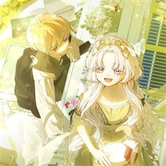
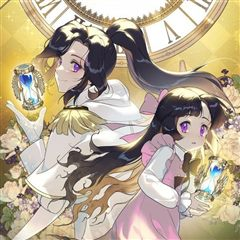
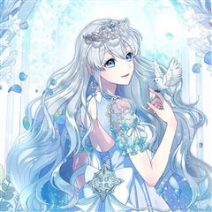
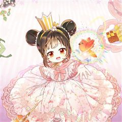
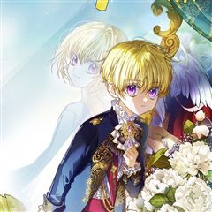

겨울성의 아기 죄수님 같은 웹툰 추천

겨울성의 아기 죄수님 · heeya / 류희온
겨울성의 아기 죄수님 재밌게 봤다면 이 웹툰들도 좋아할 거예요. 같은 장르이면서 힐링, 성장물, 로판 같은 요소가 겹치는 작품을, 겹치는 요소가 많은 순서로 20개 골랐어요.
2026-10-11 기준 · 네이버웹툰·카카오웹툰·레진코믹스 · 성인 작품 제외
내 취향으로 직접 골라 추천받기 →-
1
 네이버웹툰
네이버웹툰수인 보호소에서 남주를 입양해 버렸다
피폐삽질 소설의 시에나 로베트라는 악녀에 빙의했다. 돌연변이라는 이유로 표범 가문에서 버려져 수인 보호소에 온 남주를 괴롭히다, 뒤늦게 아들을 찾아온 공작에 의해 단명하는 역. 어떻게든 살아보겠다고 팔불출 아빠를 설득해서 공작이 오기 전까지 이반을…
힐링성장물로판로맨스네이버웹툰에서 보기 → -
2

카카오웹툰환생 공녀님
아카락시아의 힐데가르트. 천재 마검사, 최초의 마탑주, 대륙 최고 공작가의 공녀. 남부러운 것 없어 보였지만, 자신과 가문을 위해 한순간도 쉬지 않았던 그녀. 목숨을 바쳐 마성신을 봉인하고 잠들다. · · · "나, 죽은 거 아니었어…? 그랬던 내가…
힐링성장물로판로맨스카카오웹툰에서 보기 → -
3

카카오웹툰신의 사랑을 받는 아이, 황금빛 그라티아
빈민가에 사는 쓸모없는 골칫덩이, 그리티아. 가족들의 미움도, 가해지는 고통도 당연하다고 생각했던 어느 날, 기묘한 꿈을 꾸게 된다. “너는 지금도 앞으로도 위대한 길을 걷게 될 거야. 수많은 사람이 너를 존경 어린 눈으로 볼 거고 네가 걷는 길을…
힐링성장물로판로맨스카카오웹툰에서 보기 → -
4

카카오웹툰성녀는 북부 대공의 딸이 되었습니다
자신의 피로 사람들을 고쳐 줄 수 있는 신성력을 가진 리리에트. 악마 같은 대신관에게 이용만 당하다 죽음을 맞이했다. 그러던 어느 날, 눈을 뜨니 10살로 돌아와 있었다. ‘전생에 있었던 끔찍한 일들을 되풀이하지 않을 거야.’ 리리에트는 대신관에게서…
힐링성장물로판로맨스카카오웹툰에서 보기 → -
5

카카오웹툰쌍둥이 왕녀로 살아남기
죽기 직전에서야 완벽한 쌍둥이 언니에게 평생을 속아왔다는 사실을 깨달았다. 배신의 충격에 이대로 눈감기를 바랐지만… 눈떠 보니 어린 시절로 돌아와 버렸다!? 쌍둥이라는 사실을 들키지 않고 언니와 함께 하나의 왕녀를 연기해야 해! 이왕 돌아온 거, 전…
힐링성장물로판로맨스카카오웹툰에서 보기 → -
6

카카오웹툰트라베스티-가짜 황자가 되었다
제국 최연소 사형수, 레티시아는 조건부로 석방됐다. 황제가 그녀를 풀어주며 요구한 것은 단 하나. “네가 짐의 아들이 되어야겠다.” …바로, 대공령에 볼모로 보내질 막내 황자를 연기하는 것. “어차피 죽을 목숨, 황자로 죽어.” 그날부터 레티시아 보…
힐링성장물로판로맨스카카오웹툰에서 보기 → -
7카카오웹툰
내 반려동물이 악당이 되었을 때
“이 문이 열리면, 난 곧 죽게 되겠지.” 가족의 학대 끝에 악명 높은 학살자 가문, 에버하르트에 팔려 가게 된 릴리아나. 죽음을 피해 도망친 곳에서 그녀는 자신처럼 홀로 남겨진 작은 회색 강아지를 발견한다. 나와 닮은 처지의 녀석을 정성껏 돌봐주었…
힐링성장물로판로맨스카카오웹툰에서 보기 → -
8
 네이버웹툰
네이버웹툰내향남녀
MBTI IIIIII!!!!! 극 I 의 내향형 인간들이 만났다! 사이다 없이는 목이 메어 볼 수 없는 쌍방오해 트라우마 극복 연애기 학교에서 존재감 없기로 둘째가라면 서러울 남자유(여, 17세, 친구 0명)에게 학교에서 인기로는 둘째가라면 서러울…
힐링성장물로맨스네이버웹툰에서 보기 → · 내향남녀 같은 웹툰 → -
9
 네이버웹툰
네이버웹툰삼이는 재생한다
모든 게 완벽했던 인생에서 제발로 뛰쳐나와 극한의 가난한 생활을 하던 '오삼이'는 차가운 외모지만 마음만은 따뜻한 '김표준'과 그런 표준을 남몰래 좋아하는 '유찬'과 가까워지며 묘한 삼각관계로 뒤범벅된 학교생활을 하게 된다.
힐링성장물로맨스네이버웹툰에서 보기 → -
10
 네이버웹툰
네이버웹툰뽀대작렬
사랑하지 않는 시대 꿈과 사랑은 커녕 계획도 사람도 없는 서른일곱 '김하영' 그런 그녀가 20년 전 뽀대나게 사랑했던 열일곱 '김 선'으로 돌아간다.
힐링성장물로맨스네이버웹툰에서 보기 → -
11
 카카오웹툰
카카오웹툰엄마가 계약결혼 했다
리리카는 술주정뱅이 어머니를 모시고 하루하루 먹고 사는 빈민가의 소녀다. 그러던 어느날...... “꺄악, 뜨거워! 싫어!” 어머니가 비명을 지르며 잠에서 깨어나더니, “리리,살아있구나, 어려졌니?” 엉뚱한 소리를 하시고 “오늘이 며칠이지?” 정신을…
힐링로판로맨스카카오웹툰에서 보기 → · 엄마가 계약결혼 했다 같은 웹툰 → -
12
 카카오웹툰
카카오웹툰다시 한번, 빛 속으로
성녀로 추앙 받는 동생을 죽이려고 했다는 누명을 썼다. 나를 믿어주는 사람 하나 없었고, 감싸주는 사람 하나 없었다. 심지어 피를 나눈 가족마저도. 14살의 겨울. 이덴베르의 4황녀였던 나는 사람들 앞에서 비참하게 목이 잘렸다. 생을 마감하고, 새로…
힐링로판로맨스카카오웹툰에서 보기 → · 다시 한번, 빛 속으로 같은 웹툰 → -
13
 카카오웹툰
카카오웹툰내 남자 주인공의 아내가 되었다
남주 여주 커플의 아름다운 사랑으로 저주받은 용과 마물 그리고 최종 보스의 영혼까지 처참하게 박살 내는 소설 <황제와 성녀> "……하하, 차라리 지금 죽으면 좀 편히 갈 수 있으려나." 천재 마법사로 칭송받게 될 찬란한 장래, 그것보다 원하는 건 안…
힐링로판로맨스카카오웹툰에서 보기 → · 내 남자 주인공의 아내가 되었다 같은 웹툰 → -
14
 카카오웹툰
카카오웹툰사랑받는 막내는 처음이라
세계의 멸망을 막을 유일한 희망으로서 모두에게 희생을 강요받는 삶만 99번째. 제발 이번이 끝이길 바랐는데…! "아가씨가 태어나셨어요!" 기어코 100번째 삶을 시작하고 말았다. 어차피 또 영웅 취급하며 희생시키겠지. 그렇게 생각했는데, "무사히 태…
힐링로판로맨스카카오웹툰에서 보기 → · 사랑받는 막내는 처음이라 같은 웹툰 → -
15
 카카오웹툰
카카오웹툰황제궁 옆 마로니에 농장
'태양의 손'을 가진 농사 천재, 헤이즐 메이필드. 할아버지가 준 땅문서를 들고 설레는 마음으로 자신의 농장을 찾아가는데… "그 '대단히 높은 신분의 집주인'이… 황제였어?" 위대한 브라타니아 제국의 젊은 황제 이스칸다. 완전무결한 황궁을 꿈꾸던 그…
힐링로판로맨스카카오웹툰에서 보기 → · 황제궁 옆 마로니에 농장 같은 웹툰 → -
16
 카카오웹툰
카카오웹툰남주를 주웠더니 남편이 생겨버렸다
허영심에 가득 찬 웨르아젤 프로시에 그것이 내 별명이었다. 정확히 말하자면 내가 빙의하기 전 웨르아젤의 별명. 웨르아젤 진 빚을 수습하기 위해 백방으로 돈을 구할 방법을 찾던 도중! 공작가에서 잃어버린 아이를 찾는다는 전단지를 발견했다. 사례금은 빚…
힐링로판로맨스카카오웹툰에서 보기 → · 남주를 주웠더니 남편이 생겨버렸다 같은 웹툰 → -
17
 카카오웹툰
카카오웹툰계모인데, 딸이 너무 귀여워
다이어트도, 업무도 열심히 하면서 평범하게 살아가던 나 이백합…. 과로사로 죽은 줄 알았는데 자신보다 예쁜 의붓딸을 질투한 나머지 딸을 독살하고, 결국 남편에게 처형되는 동화에 빙의했다?! 이대로 처형당할 수 없으니 귀엽고 사랑스러운 딸, 블랑슈와의…
힐링로판로맨스카카오웹툰에서 보기 → · 계모인데, 딸이 너무 귀여워 같은 웹툰 → -
18
 카카오웹툰
카카오웹툰아빠가 힘을 숨김
Q. 믿었던 아빠가 엑스트라가 아닐 때의 심정을 서술하시오. A. 뭐, 뭐야…. 내 ‘지나가던 제국민 1’ 역할 돌려줘요…. 1년 365일 전쟁 중! 하루라도 바람 잘 날 없는 미친 세계관! 이곳에서 엑스트라로 태어났다는 건 축복이었다. “공주~ 일…
힐링로판로맨스카카오웹툰에서 보기 → · 아빠가 힘을 숨김 같은 웹툰 → -
19
 카카오웹툰
카카오웹툰대공가에 입양된 성녀님
“그만하고 싶어. 더는… 이용당하면서 살고 싶지 않아.” 성녀의 힘을 가졌음에도 내정된 가짜 성녀를 위해 평생을 감금당한 채 살아야 했다. 괴로움을 견디지 못해 죽고 나면 되돌아왔고, 강제로 반복되는 회귀 끝에 다른 방법을 택한 다이나는 우연히 대공…
힐링로판로맨스카카오웹툰에서 보기 → · 대공가에 입양된 성녀님 같은 웹툰 → -
20
 카카오웹툰
카카오웹툰악역 소녀는 사랑받기가 부끄러워요
여주인공 ‘로렛타’를 괴롭히고 철저히 단죄당하는 악랄한 노예 상인의 딸. ‘멜로디’. 나는 살고 싶어서 잘해준 것뿐인데… “로레따는 메로디 절대 안 잊어!” “메로디 없으면 로레따 울 거야!” “그로니까 메로디 여기루 빨리 데려와야 대!” “메로디가…
힐링로판로맨스카카오웹툰에서 보기 → · 악역 소녀는 사랑받기가 부끄러워요 같은 웹툰 →